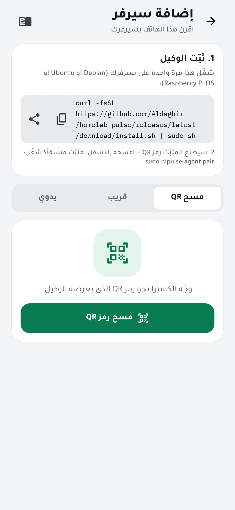
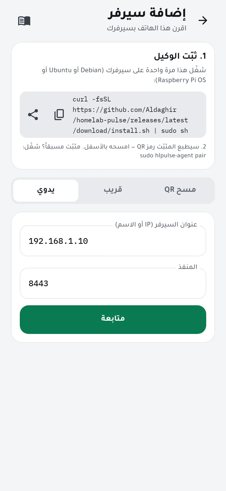
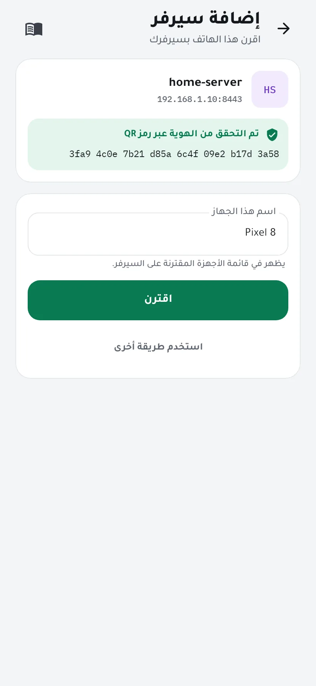
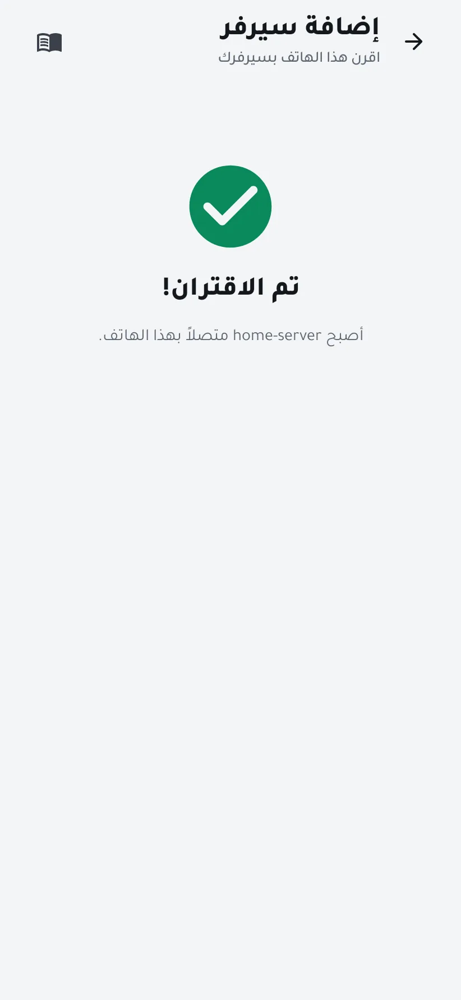

ثبّت الوكيل واقرن هاتفك
يقرأ Homelab Pulse سيرفرك عبر وكيل صغير يعمل عليه. تثبّته مرة واحدة بأمر واحد، ثم تقرن هاتفك بمسح رمز QR. يستغرق ذلك نحو خمس دقائق.
تحتاج إلى
- سيرفر يعمل بنظام Debian أو Ubuntu أو Raspberry Pi OS بإصدار 64 بت (amd64 أو arm64) مع systemd.
- حساب يملك صلاحية
sudoعليه. - أن يكون هاتفك على شبكة السيرفر نفسها في أول اقتران.
-
انسخ أمر التثبيت
افتح في التطبيق إضافة سيرفر. تجد أمر التثبيت في البطاقة الأولى: انسخه، أو شاركه إلى الحاسوب الذي تصل منه إلى سيرفرك.
curl -fsSL https://github.com/Aldaghir/homelab-pulse/releases/latest/download/install.sh | sudo sh
يعمل هذا الأمر مع أول إصدار عام قريباً. أعلمني عند الإطلاق
تفضّل قراءة السكربت قبل تشغيله؟ نزّل
install.shمن آخر إصدار واقرأه، ثم شغّله بالأمرsudo sh install.sh. يتحقق المثبّت من الوكيل الذي ينزّله بمطابقته مع بصمات الإصدار (checksums).
-
شغّله على سيرفرك
الصق الأمر في طرفية السيرفر. يثبّت الوكيل خدمةَ systemd باسم
hlpulse-agentتعمل بمستخدمها الخاصhlpulse، ويطبع في النهاية رمز QR ورمز اقتران وبصمة السيرفر. يعمل الرمز مرة واحدة وتنتهي صلاحيته بعد 10 دقائق.انتهت صلاحية الرمز، أو كان الوكيل مثبّتاً من قبل؟ شغّل
sudo hlpulse-agent pairلرمز جديد. -
امسح رمز QR
اضغط مسح رمز QR ووجّه الكاميرا نحو الطرفية.
تعذّر المسح؟ يعرض خيار قريب الوكلاءَ المعلنين على شبكة Wi-Fi، ويقبل خيار يدوي عنوان IP للسيرفر أو اسمه على المنفذ 8443.

الإدخال اليدوي: عنوان السيرفر والمنفذ 8443. -
تأكّد أنه سيرفرك ثم اقترن
يعرض التطبيق اسم السيرفر وعنوانه وبصمته. مسح رمز QR يثبت هوية السيرفر وحده؛ أما عند الإضافة اليدوية فقارن البصمة بالتي طبعها الوكيل.
اكتب رمز الاقتران إن طلبه التطبيق، وسمِّ هذا الهاتف، ثم اضغط اقترن.

-
انتهى
تُفتح اللوحة بحالة سيرفرك الحيّة. الخطوة التالية: الوصول إليه من خارج المنزل، أو استقبال التنبيهات على Telegram.

إن واجهتك مشكلة
- التطبيق لا يصل إلى السيرفر
- يجب أن يكون الهاتف والسيرفر على الشبكة نفسها، وأن يقبل السيرفر الاتصال على منفذ TCP رقم 8443. إن كان عليه جدار حماية فاسمح بهذا المنفذ من شبكتك المحلية.
- البصمة لا تطابق
- لا تقترن: جهاز آخر يردّ على ذلك العنوان. شغّل
sudo hlpulse-agent pairعلى السيرفر وقارن مرة أخرى. - هل الوكيل يعمل؟
- الأمر
systemctl status hlpulse-agentيعرض حالته، والأمرjournalctl -u hlpulse-agent -eيعرض آخر رسائله. - إزالة الوكيل
- شغّل أمر التثبيت مع إضافة
--uninstall:curl -fsSL …/install.sh | sudo sh -s -- --uninstall، فيوقف الوكيل ويزيله. تبقى بياناته في/var/lib/hlpulseوإعداداته في/etc/hlpulseحتى تحذفها بنفسك.